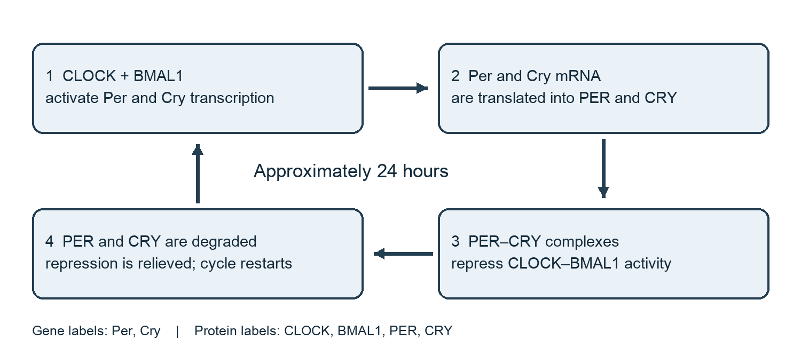
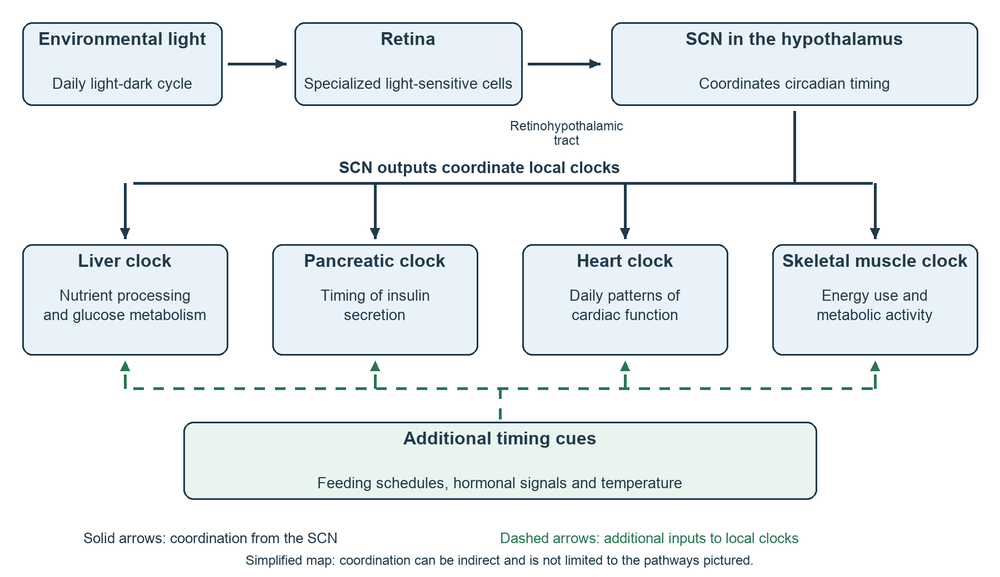
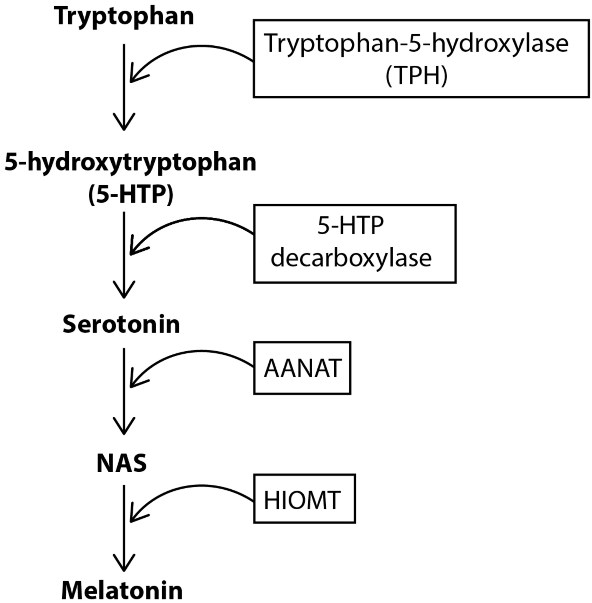
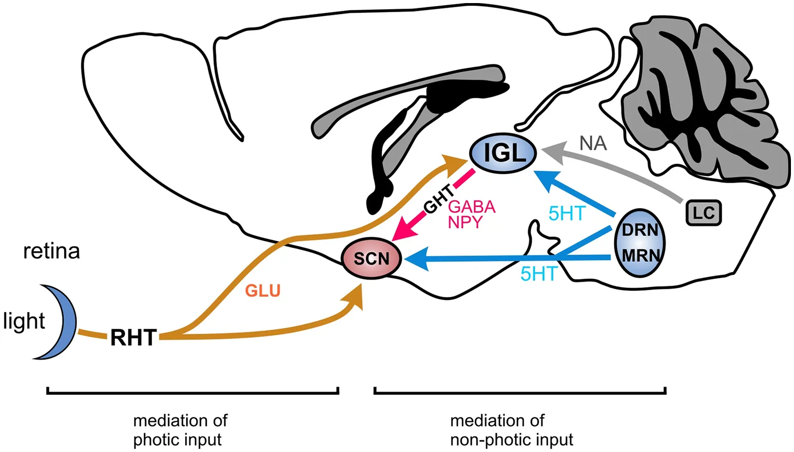
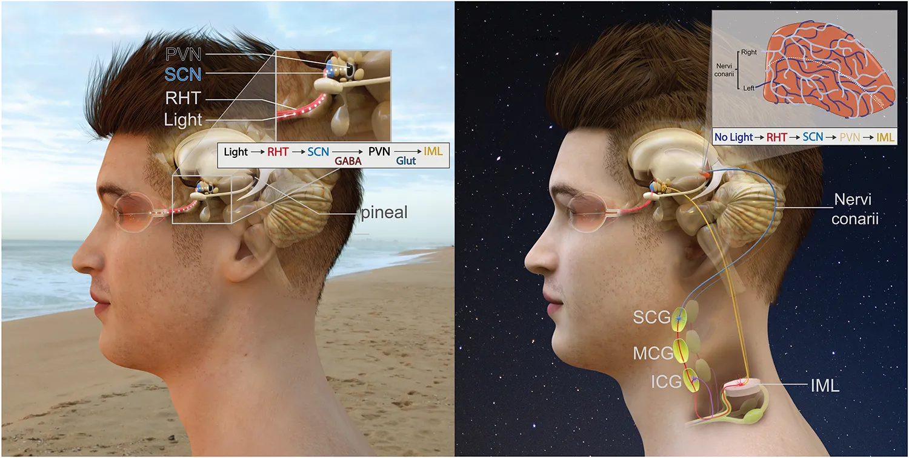

CONTRIBUTORS
- John Liu
- Copyeditor
- Peer reviewer
- Subject Matter Expert - ‘Genetics of the Molecular Clock and Cyclic Behavior’
- Sections:
- The Molecular Clock and Circadian Rhythms;
- Central and Local Clocks in the Brain and Body;
- Genetic Mechanisms of the Molecular Clock;
- Clock Genes and Cyclic Behavior
- Figures x,y,z
- Sections:
- Matthew Hernandez
LEARNING OBJECTIVES
After reading this chapter, students should be able to …
- Relate the molecular clock to the production and regulation of circadian rhythms.
- Define serotonin, identify the raphe nuclei as the main source of brain serotonin, and list the two enzymatic steps that build serotonin from tryptophan. (Remember / Understand)
- Describe serotonin’s daily rhythm in the suprachiasmatic nucleus (SCN), and explain what its persistence in constant darkness reveals about what controls its timing. (Understand / Analyze)
- Describe how serotonin acts as an input to the SCN and predict the direction of a serotonergic phase shift at a given circadian time. (Understand / Apply)
- Trace the pathway by which serotonin becomes melatonin in the pineal gland, and explain how AANAT gives melatonin its daily rhythm. (Understand / Analyze)
- Compare serotonin’s effects on the clock across species, and evaluate why findings in brain slices (in vitro) and living animals (in vivo) sometimes disagree. (Analyze /Evaluate)
- Compare the suprachiasmatic nucleus with local molecular clocks in the brain and body.
- Explain how CLOCK, BMAL1, PER, and CRY interact to produce an approximately 24-hour rhythm.
- Evaluate evidence connecting clock genes to cyclic behaviors such as sleeping, feeding, and physical activity.
CHAPTER OUTLINE
- Section: The Molecular Clock and Circadian Rhythms
- Define circadian rhythms and give examples, including sleep, activity, body temperature, and feeding.
- Introduce the molecular clock as a system of genes and proteins that helps produce these rhythms.
- Explain that environmental signals such as light synchronize the molecular clock with the outside world.
- Briefly discuss why genetics is important for understanding biological timing.
- Section: Serotonin
- What Is Serotonin? (the molecule, its two-step synthesis, and the raphe nuclei)
- Serotonin’s Daily Rhythm (release in the SCN rises and falls on a clock-driven schedule)
- Serotonin as Input to the Clock (The Clock and Its Inputs; Forward by Day; Gating by Night; The Receptor Involved)
- Serotonin as Substrate of the Clock’s Output (AANAT and the melatonin rhythm)
- What Remains Unsettled (species and method differences)
- Section: Central and Local Clocks in the Brain and Body
CHAPTER WRITTEN CONTENT - Mathew
Serotonin
1. What Is Serotonin?
Commonly known as the “happy chemical,” serotonin, or 5-hydroxytryptamine (5-HT), is a neurotransmitter: a chemical messenger that one neuron releases to signal another, either activating it or quieting it. The body must build serotonin from available resources, which it does by using the amino acid tryptophan obtained through food (see Figure 1). To do this, the enzyme tryptophan hydroxylase (TPH) first converts tryptophan into an intermediate, or in-between, amino acid called 5-hydroxytryptophan (5-HTP). Then, a second enzyme called aromatic amino acid decarboxylase (AADC) converts the 5-HTP into serotonin. Of these two steps, the first is the slower one and therefore sets the pace of the whole process, which is why TPH is called the rate-limiting enzyme. Notably, TPH exists within the body in two forms, one found mainly in the gut and the other in the brain, with about 90% of serotonin made in the first (Akram et al., 2024). Moreover, since serotonin in the blood does not easily cross the blood-brain barrier that is the tight lining of the brain’s blood vessels, the brain primarily relies on its own smaller supply of serotonin, and it is this supply that is being referenced in the context of the circadian clock. This supply within the brain comes mainly from clusters of neurons along the midline of the brainstem, called the raphe nuclei, of which two nuclei matter mainly: the dorsal raphe and the median raphe (see Figure 2). As the following sections show, it is these two nuclei that connect serotonin to the circadian clock.
2. Serotonin’s Daily Rhythm
The supply that the dorsal raphe and median raphe nuclei provide, however, is not constant, and instead rises and falls over the course of each day. A clear example of this can be found from Dudley et al. (1998), where, by sampling the fluid around neurons in the suprachiasmatic nucleus (SCN), the brain’s master circadian clock (see Central and Local Clocks in the Brain and Body), they found that serotonin release in living Syrian hamsters fell to its lowest level during the late midday, but increased sharply to its peak at the transition from light to darkness, and then declined through the night. This cycle persisted when the hamsters were kept in constant darkness without light to signal the time of day: the peak was at the start of their subjective night, or rather began at the half of the cycle that the hamsters’ own clocks treated as night. That is, the timing of serotonin release was set by the clock itself rather than by the typical signaling of light. The neurons that supply this serotonin may also keep track of time of their own. Specifically, in adult male rats, Strnad and Spencer (2026) found that core rhythmic clock genes rise and fall over roughly 24 hours within the dorsal and median raphe, and that the raphe’s serotonin-producing neurons express these genes. Since this finding comes from a single recent study of one sex in one species, however, it should be treated with a degree of caution until it is further verified. Nonetheless, the hamster findings show how serotonin reaches the clock as a rhythmic supply rather than a background supply, which contextualizes the content for the next section, where what serotonin does depends on the time of day.
3. Serotonin as Input to the Clock
3.1 The Clock and Its Inputs
Left alone, the SCN maintains a rhythm of roughly 24 hours (about 24.2 hours in humans; Czeisler et al., 1999); external time cues such as sunlight and mealtimes, called zeitgebers, reset it regularly so that it stays aligned with Earth’s approximately 24-hour day. Of these cues, the strongest is light, which reaches the SCN directly from the eyes (described in Central and Local Clocks in the Brain and Body), but serotonin serves as another input and can arrive by two routes. From what has been tested so far, using hamsters, serotonergic neurons of the median raphe project directly to the SCN, while those of the dorsal raphe project to the intergeniculate leaflet (IGL), a relay region in the thalamus that passes nonphotic, or non-light, information on to the SCN (Meyer-Bernstein & Morin, 1996; see Figure 2). In other words, the first route using the median raphe is direct and the other route using the dorsal raphe is relayed by the IGL. However, the specifics of what serotonin does once it then arrives is dependent on the time of day, mainly separated by day and night.
3.2 Forward by Day
The dependence on the time of day regarding serotonin’s results is described in terms of phase shifts; that is, its changes in the timing of a rhythm: a phase advance moves the circadian clock earlier, while a delay moves it later. The size of the shift that a stimulus produces, and whether it is an advance or a delay, is dependent on when within the cycle the stimulus is delivered. This relationship is often graphed or plotted and then is called a phase response curve (PRC). Conventionally, the time within the cycle is measured in circadian time (CT), which counts from the start of an organism’s subjective day, where CT0 to CT12 marks this subjective day while CT12 to CT24 marks the subjective night. For serotonin, the most relevant window is the subjective day. In a study where hamsters were given 8-OH-DPAT, a synthetic drug that activates serotonin receptors, in the middle of their subjective day, their clocks advanced (Challet et al., 1998). Likewise, in mice, the same drug given at CT6 advanced the start of their daily wheel-running, which the activity researchers used to read the clock, by about 37 minutes (Shelton et al., 2014). The shifts can be induced, then, but the results yield that they are merely nudges rather than any meaningful shove.
3.3 Gating by Night
At night, this relationship of advancing the cycle switches: rather than the clock itself shifting as it does during the day, serotonin reduces the clock’s sensitivity to light at night. Working again with hamsters, Rea, Glass, and Colwell (1994) found that 8-OH-DPAT weakened the phase advance that would otherwise be normally produced by a nighttime light pulse, in fact, reducing it by 57 percent at a low dose and by 82 percent at a dose ten times higher. At this higher dose, the drug also blocked light-induced phase delays; that is to say, the circadian clock was not being moved so much as it was being made harder to move. Particularly within interest, the start of the night is also when serotonin release in the hamsters’ SCN reaches its peak (as discussed in Section 2). Taken together, then, the daytime and nighttime findings suggest that serotonin acts as a forward signal during the day and as a gate at night.
3.4 The Receptor Involved
These effects of signaling and gating depend on which serotonin receptors are activated. 8-OH-DPAT acts on more than one type of serotonin receptor, but in mice, the evidence points to one of them, called 5-HT7, as the receptor mainly responsible for the daytime advance. When activated, the 5-HT7 receptor raises the level of cyclic AMP (cAMP), a messenger molecule that relays the receptor’s signal to the machinery inside the cell and that will reappear in section 4. Pretreating mice with a drug that selectively blocks 5-HT7 receptors completely prevented the 8-OH-DPAT advance and also weakened the clock’s shifts in response to light (Shelton et al., 2014). Definitive conclusions regarding if the daytime and nighttime effects share a singular mechanism, however, are not yet determined, but Section 5 will indeed return to the questions that remain open.
4. Serotonin as Substrate of the Clock’s Output
Within a small pine-shaped gland near the center of the brain, accordingly named the pineal gland, serotonin serves a rather different role than its previously explored use as an input: instead of acting as a neurotransmitter, serotonin serves as a chemical reactant from which the hormone melatonin is made. This conversion consists of two main steps: first, serotonin is acetylated to form N-acetylserotonin by the enzyme arylalkylamine N-acetyltransferase, abbreviated AANAT; then, N-acetylserotonin is methylated to form melatonin by a second enzyme. Of these two steps, the first, carried out by AANAT, is the one that pertains the most in relevancy for circadian timing. In particular, the activity of the AANAT enzyme rises and falls throughout the day and, in doing so, sets the daily cycle of melatonin release. Aptly nicknamed “the Timezyme” by Klein (2007), AANAT is essentially what turns the supply of serotonin into a hormonal signal useful for the circadian cycle; that is, the rhythm comes from the regulation of the enzyme rather than from the amount of serotonin available. Specifically, the regulation goes through cyclic AMP (cAMP), the same messenger from Section 3.4: at night, the rising cAMP switches the AANAT on and also protects it from being broken down (Klein, 2007). The size of this nighttime increase varies across species, but it is especially large in rats, in which AANAT messenger RNA (mRNA) rises more than 150-fold at night (Roseboom et al., 1996). The instructions to make melatonin, however, do not actually come from the pineal gland itself, but instead are relayed from the SCN through a chain of neurons that leaves the brain, runs down into the spinal cord and out to a cluster of nerve cells in the neck, and then climbs back up to the pineal gland, where its nerve endings release the chemical compound norepinephrine at night, raising cAMP and switching melatonin production on (Simonneaux & Ribelayga, 2003; see
Figure 3). Thus, serotonin, the same input molecule that resets the circadian clock, reappears
later as the substrate, to be then synthesized into melatonin, the final hormonal output.
5. What Remains Unsettled
Despite these aforementioned findings, serotonin’s role in the clock remains nondefinitive, with much of the disagreement going back to which animals were studied and how they did so. For instance, the primary usage of rodents such as hamsters, mice, and rats in scientific experiments generally and within neurobiological testing is of indubitable note. More specifically, for hamsters and mice, serotonergic drugs act as nonphotic signals, advancing the clock during the subjective day; by contrast, for rats, they behave more like light, shifting the clock at night, which has become a mismatch coined and known as the serotonergic paradox (Cuesta et al., 2009). To that end, the method of study matters as well. In another instance, serotonin applied directly to isolated slices of mouse SCN (in vitro) during the subjective day advances the clock by two to three hours (Prosser, 2003), whereas 8-OH-DPAT given to living mice (in vivo) produces the far smaller advance of about 37 minutes described in Section 3.2 (Shelton et al., 2014). Perhaps surprisingly, removing serotonin does not actually stop the clock in these experiments: tested adult mice that could no longer make serotonin in the brain still kept a daily rhythm, albeit a transformed one (Whitney et al., 2016; see Case Study). Serotonin, then, appears to be one of several signals that adjust the clock rather than the source of its rhythm, as counter-simplified as that may be.
○
CHAPTER WRITTEN CONTENT - John Liu
The Molecular Clock and Circadian Rhythms
The molecular clock is an internal cellular mechanism that helps create this timing. It is a cycle made of genes and proteins whose activity level changes throughout the day. These changes can affect neuronal activity, hormone release, and behavioral timing. Reviews of circadian genetics explain how interactions among clock genes and proteins produce daily rhythms and influence functions throughout the body (Kuo et al., 2026; Takahashi, 2017). (*Note - Will extend this portion of the text with further research and background information)
Central and Local Clocks in the Brain and Body
Within the hypothalamus, sitting directly above the point where the optic nerves cross, sits a tiny structure known as the suprachiasmatic nucleus (SCN). In mammals, the SCN acts as the master biological circadian pacemaker. Specialized cells in the retina receive environmental light and send signals directly to the SCN through a pathway called the retinohypothalamic tract. Through this process, the SCN synchronizes internal rhythms with the light-dark cycle and sends signals that help regulate sleep cycles, daily activity, body temperature, hormone release, and other daily functions (Das & Launico, 2026).
Individual neurons in the SCN contain molecular clocks and also display daily changes in activity. These daily changes in neuronal activity are regulated by internal molecular clocks. In turn, neuronal activity can influence the expression of clock genes (Colwell, 2011).
Furthermore, the SCN contains many neurons that communicate with each other using neurotransmitters like GABA and vasoactive intestinal polypeptide (VIP). VIP plays an important role in synchronizing the individual cellular clocks into a stronger and more coordinated timing signal. GABA also influences synchronization among SCN neurons and, depending on the conditions, may either support or reduce it. Together, this chemical and electrical communication allows the individual cellular clocks to contribute to the SCN’s coordinated rhythm (Herzog et al., 2017).
However, the SCN is not the only internal timing system. Other internal molecular clocks are located in varying brain regions and organs such as the liver, heart, pancreas, and skeletal muscles. These clocks contribute to different functions within specific tissues. For example, clocks located in metabolic organs help regulate digestion and glucose levels. The main difference between the SCN and other local clocks is that the SCN uses light information as its main cue for timing regulation, while local clocks use a combination of stimuli. These stimuli include feeding, hormones, temperature, and signals from the nervous system; they not only cue local clocks to regulate time, but also help keep these clocks connected (Takahashi, 2017; Kuo et al., 2026).
Genetic Mechanisms of the Molecular Clock
The molecular clock is driven by a transcription-translation feedback loop. Transcription is the process where information in DNA is copied into RNA messengers; translation is the process where the cell uses that RNA to build a protein. At the beginning of the cycle, CLOCK and BMAL1, two master regulators, form a pair inside cells to drive the body's 24-hour internal clock, known as the circadian rhythm. They join together in the cell's nucleus to create a protein complex called a heterodimer (Menet et al., 2014). Together, they act as a transcription factor by binding regulatory regions of DNA and turning on specific target genes, such as Per (Period) and Cry (Cryptochrome). Without them—especially BMAL1—the entire molecular clock completely breaks down. Importantly, since they have the ability to open up tightly packed chromatin, they act as pioneer-like transcription factors, making the DNA accessible so thousands of other genes can be expressed at specific times of the day.
After CLOCK and BMAL1 form a pair, they activate the transcription of the Per and Cry genes. The resulting messenger RNA provides instructions for producing PER and CRY proteins. These proteins slowly collect in the cell, form complexes, and enter the nucleus. They then inhibit the activity of CLOCK and BMAL1, causing the transcription of Per and Cry to slow. Since the products of the process inhibit the same process that produced them, this process is called negative feedback. Later, PER and CRY proteins are modified and degraded. As that happens, CLOCK and BMAL1 reactivate and resume transcription, causing the cycle to repeat. The entire process involves delays, making the cycle approximately 24 hours.
There are additional regulatory loops that help stabilize this cycle. REV-ERB and ROR proteins act as a molecular push-and-pull switch that turns the Bmal1 gene on and off at exact times of day. REV-ERB is a protein that suppresses the Bmal1 gene, while ROR is a protein that activates the Bmal1 gene (Guillaumond et al., 2005). Because they compete for the same binding site, they act as an inversely proportional relationship: high levels of REV-ERB block transcription and lower BMAL1 levels, while high levels of ROR facilitate transcription and increase BMAL1 levels. The core clock proteins also regulate many clock-controlled genes. These genes do not create the clock itself, but allow the clock to influence other cell functions, enabling different tissues to use a similar clock mechanism while producing different rhythms, such as hormone release in one tissue and metabolic activity in another (Takahashi, 2017).
Although cells throughout the body use the same core negative feedback loop, the genes regulated by these clocks and their effects differ across tissues. For example, a liver cell may regulate genes involved in processing nutrients, while a neuron may regulate genes that affect electrical activity. Signals from the SCN, along with feeding and other daily cues, help align these local cycles. This connection between the shared genetic mechanism and different tissue functions displays how one circadian system can organize many biological rhythms (Kuo et al., 2026).
Clock Genes and Cyclic Behavior
The molecular clock influences many behaviors that follow a daily repeated pattern. Because these behaviours can be measured, researchers can use them to study how genes contribute to circadian timing. One method of studying this behaviour is to compare normal mice with mice that have a mutation in the clock gene. Turek and colleagues studied mice carrying a mutation in Clock, one of the genes involved in the circadian system. The mutant mice displayed changes in daily timing of movement, feeding, and metabolism. They found that their feeding rhythm was weaker than that of normal mice, and many developed obesity and other issues regarding metabolic processes. These findings suggest that Clock contributes to feeding rhythm and activity across the day (Turek et al., 2005).
However, this does not necessarily mean that Clock is the guiding gene that controls all feeding behaviors. The mutation also affects metabolic processes, which in turn, could change eating habits and appetite. Light can also directly influence activity, even when the internal clock is not functioning normally. Therefore, a daily pattern of activity under a light-dark cycle does not necessarily mean that the internal clock is producing that pattern. For this reason, researchers must investigate this behavior over several days and under many different environmental conditions.
Research involving Bmal1 has revealed that clock genes contribute to cyclic behavior. Mice that lack functional Bmal1 are found to have dysfunctional circadian pattern activity. However, removing the gene from the entire body can also cause developmental issues, creating issues independent from mutated genes. To combat this issue, some researchers removed Bmal1 from only some particular parts of the body. Mieda and Sakurai studied mice lacking Bmal1 in the nervous system. These mice had difficulty adjusting activity and feeding behavior. These findings suggest that clocks outside the SCN also contribute to the timing of food-related behaviors (Mieda & Sakurai, 2011).
Conclusion
The SCN and internal molecular clocks help produce circadian rhythms through interactions among environmental cues, genes, and proteins. Specifically, the CLOCK–BMAL1 and PER–CRY negative feedback loop generates an approximately 24-hour cycle, while additional regulators, such as feeding and environmental light, help maintain its timing. In mammals, the eyes receive environmental light information that is sent to the SCN, coordinating local clocks throughout the brain and body. Although these clocks use similar molecular processes, their function regulation in tissues vary from tissue to tissue. Importantly, research involving mice with mutations to the Clock or Bmal1 gene reveal a connection between clock genes and daily activity and feeding patterns. However, overarching health, development, and metabolism changes must be considered when evaluating these behavioral changes before making conclusions. Together, these findings show how cellular clocks, signals from the SCN, and environmental cues work together to organize daily biological rhythms.
CHAPTER ADD-INS
Author: John Liu

Figure description. This simplified diagram shows the negative feedback loop; REV-ERB and ROR provide additional regulation not pictured here. CLOCK and BMAL1 activate transcription of Per and Cry genes. Their mRNA is translated into PER and CRY proteins, which accumulate and form complexes that inhibit CLOCK–BMAL1 activity. Modification and degradation of these proteins relieve repression, allowing another cycle of transcription to begin. Delays during this process help produce an approximately 24-hour rhythm. The arrows show the chronology of events, not equal time intervals.
Attribution. Original schematic created on Canva.
Author: John Liu

Figure description. Light detected by specialized cells in the retina reaches the suprachiasmatic nucleus (SCN) through the retinohypothalamic tract. The SCN uses this information to help align internal timing with the light-dark cycle. Its outputs, depicted above, coordinate clocks throughout the body through neural signals, hormonal signals, and daily changes in body temperature. The solid arrows represent this coordination.
Local clocks: Liver clocks help time nutrient processing and glucose metabolism; pancreatic clocks contribute to the timing of insulin secretion. Heart and skeletal-muscle clocks contribute to daily patterns of cardiac function and energy use.
Additional timing cues. The dashed arrows show that local clocks also respond to cues such as feeding schedules, hormones, and temperature. Some of these signals are influenced by the SCN, while others reflect behavior and the environment.
Attribution. Original schematic created on Canva.
GLOSSARY
| Term | Definition |
|---|---|
| Circadian rhythm | A biological pattern that repeats approximately every 24 hours. |
| Molecular clock | A system of interacting genes and proteins that generates biological timing within a cell. |
| Gene | A segment of DNA containing instructions for producing a functional RNA or protein product. |
| Protein | A molecule made of amino acids that performs functions such as regulating genes, transmitting signals, or supporting cell structure. |
| Hypothalamus | A brain region involved in regulating functions such as body temperature, hunger, hormone release, and circadian timing. |
| Suprachiasmatic nucleus (SCN) | A region of the hypothalamus that receives light information from the eyes and coordinates circadian rhythms in mammals. |
| Circadian pacemaker | A biological timing system that generates circadian rhythms and helps coordinate their timing. |
| Retina | The light-sensitive tissue at the back of the eye that contains cells involved in vision and detecting light for circadian timing. |
| Retinohypothalamic tract | A nerve pathway that carries light information from specialized retinal cells to the SCN. |
| Light-dark cycle | The recurring pattern of light and darkness that helps synchronize biological clocks with the environment. |
| Neuron | A nerve cell that receives and transmits information through electrical and chemical signals. |
| Expression of clock genes | The process of using information in clock genes to produce RNA and, for protein-coding genes, clock proteins. |
| Neurotransmitter | A chemical messenger released by neurons that influences other cells. |
| GABA | Gamma-aminobutyric acid, a neurotransmitter that influences neuronal activity and synchronization within the SCN. |
| Vasoactive intestinal polypeptide (VIP) | A signaling peptide that helps coordinate the timing of individual cellular clocks in the SCN. |
| Synchronization | The coordination of rhythms so that they maintain a consistent timing |
| relationship. | |
|---|---|
| Local clock | A molecular clock in a particular brain region, organ, or tissue that helps time functions in that location. |
| Transcription-transl ation feedback loop | A cycle in which genes are transcribed into RNA, the RNA is translated into proteins, and those proteins influence further gene transcription. |
| Transcription | The process of copying information from DNA into RNA. |
| Translation | The process of using information in messenger RNA to build a protein. |
| DNA | Deoxyribonucleic acid, the molecule that stores genetic information. |
| Messenger RNA (mRNA) | An RNA molecule that carries instructions used by the cell to produce a protein. |
| Nucleus | The compartment in a cell that contains most of its DNA and is a major site of gene transcription. |
| Heterodimer | A complex formed by two different molecular subunits, such as CLOCK and BMAL1 proteins. |
| Transcription factor | A protein that helps regulate the transcription of particular genes. |
| Pioneer-like transcription factor | A transcription factor that can bind DNA in relatively inaccessible chromatin and help make that region accessible to other regulatory proteins. |
| Chromatin | DNA and its associated proteins, which package genetic material and influence access to genes. |
| CLOCK | A clock protein that partners with BMAL1 to activate transcription of genes involved in circadian timing. |
| BMAL1 | A clock protein that partners with CLOCK or a related protein to activate genes involved in the molecular clock. |
| Clock | A mouse gene that encodes the CLOCK protein. |
| Bmal1 | A mouse gene that encodes the BMAL1 protein. |
| Per | A family of Period genes that encode PER proteins involved in circadian negative feedback. |
| Cry | A family of Cryptochrome genes that encode CRY proteins involved in circadian negative feedback. |
| PER | Period proteins that help regulate circadian timing and participate with CRY proteins in negative feedback. |
| CRY | Cryptochrome proteins that repress CLOCK–BMAL1-driven transcription as part of the molecular clock’s negative feedback loop. |
|---|---|
| Negative feedback | A process in which the products of a system reduce the activity that produced them. |
| REV-ERB | A family of nuclear receptor proteins that repress transcription of genes such as Bmal1 and help regulate circadian timing. |
| ROR | A family of nuclear receptor proteins that activate transcription of genes such as Bmal1 and help regulate circadian timing. |
| Clock-controlled gene | A gene whose expression is regulated by the circadian clock and helps produce timed cellular or bodily functions. |
| Clock gene | A gene whose product contributes to generating or regulating circadian timing. |
| Mutation | A change in a DNA sequence that may alter a gene’s expression or the function of its product. |
| Feeding rhythm | A recurring pattern in the timing or amount of food consumption. |
| Cyclic behavior | A behavior, such as sleeping, feeding, or movement, that repeats in a regular pattern over time. |
REFERENCES Colwell, C. S. (2011). Linking neural activity and molecular oscillations in the SCN. Nature Reviews Neuroscience, 12(10), 553–569. https://doi.org/10.1038/nrn3086 Das, J. M., & Launico, M. V. (2026). Neuroanatomy, nucleus suprachiasmatic. In StatPearls. StatPearls Publishing. https://www.ncbi.nlm.nih.gov/books/NBK546664/Guillaumond, F., Dardente, H., Giguère, V., & Cermakian, N. (2005). Differential control of Bmal1 circadian transcription by REV-ERB and ROR nuclear receptors. Journal of Biological Rhythms, 20(5), 391–403. https://doi.org/10.1177/0748730405277232 Haque, S. N., Booreddy, S. R., & Welsh, D. K. (2019). Effects of BMAL1 manipulation on the brain’s master circadian clock and behavior. Yale Journal of Biology and Medicine, 92(2), 251–258. https://pmc.ncbi.nlm.nih.gov/articles/PMC6585533/Herzog, E. D., Hermanstyne, T., Smyllie, N. J., & Hastings, M. H. (2017). Regulating the suprachiasmatic nucleus (SCN) circadian clockwork: Interplay between cell-autonomous and circuit-level mechanisms. Cold Spring Harbor Perspectives in Biology, 9(1), a027706. https://doi.org/10.1101/cshperspect.a027706 Kuo, T. T., Wang, J., & Kay, S. A. (2026). Time matters: Circadian genetics and the molecular logic of human health and disease. Nature Reviews Genetics, 27(10), 744–761. https://doi.org/10.1038/s41576-026-00962-2 Menet, J. S., Pescatore, S., & Rosbash, M. (2014). CLOCK:BMAL1 is a pioneer-like transcription factor. Genes & Development, 28(1), 8–13.
https://doi.org/10.1101/gad.228536.113 Mieda, M., & Sakurai, T. (2011). Bmal1 in the nervous system is essential for normal adaptation of circadian locomotor activity and food intake to periodic feeding. The Journal of Neuroscience, 31(43), 15391–15396. https://doi.org/10.1523/JNEUROSCI.2801-11.2011 Takahashi, J. S. (2017). Transcriptional architecture of the mammalian circadian clock. Nature Reviews Genetics, 18(3), 164–179. https://doi.org/10.1038/nrg.2016.150 Turek, F. W., Joshu, C., Kohsaka, A., Lin, E., Ivanova, G., McDearmon, E., Laposky, A., Losee-Olson, S., Easton, A., Jensen, D. R., Eckel, R. H., Takahashi, J. S., & Bass, J. (2005). Obesity and metabolic syndrome in circadian Clock mutant mice. Science, 308(5724), 1043–1045. https://doi.org/10.1126/science.1108750
CHAPTER ADD-INS
Focus Question (placement: before Section 1) How does serotonin both reset the body’s master circadian clock while also serving as the chemical material that the clock uses to signal that it is night?
- Author: Lumsden, Clarkson, and Cakmak (2020); placement: Section 1

- Figure Description: Tryptophan is turned into 5-HTP, then serotonin, followed by NAS and ultimately melatonin. These reactions and syntheses will be explained more in-depth in Sections 1 and 4.
- Attribution: Lumsden et al. (2020), Figure 1:
https://www.frontiersin.org/journals/neuroscience/articles/10.3389/fnins.2020.00264/full
Figure 2 - Light and Serotonergic Inputs into the Circadian System
- Author: Stieglitz et al. (2018); placement: Section 3.1

- Figure Description: The suprachiasmatic nucleus (SCN) is the master circadian clock and is shown in the bottom center in red. Inputs from the eyes reach the SCN through the retinohypothalamic tract (RHT), the orange pathway on the left. On the right, serotonin, or 5-hydroxytryptamine (5HT), arrives through the blue pathways: the median raphe nucleus (MRN) projects directly to the SCN, while the dorsal raphe nucleus (DRN) projects to the intergeniculate leaflet (IGL), which relays to the SCN (as mapped in hamsters). The gray pathway shows noradrenaline (NA) input from the locus coeruleus (LC). Other labels: GLU, glutamate; GHT, geniculohypothalamic tract; GABA, gamma-aminobutyric acid; NPY, neuropeptide Y.
- Attribution: Stieglitz et al. (2018), Figure 1:
https://www.frontiersin.org/journals/molecular-neuroscience/articles/10.3389/fnmol.2017 .00436/full
- Figure Interpretation Question (FIQ): (a) Which route has serotonin (5HT) go directly to the SCN, and (b) which instead uses a relay?
- Author: Lumsden, Clarkson, and Cakmak (2020); placement: Section 4

- Figure Description: The left panel shows the day, and the right panel shows the night. During the day (left), light from the eye travels along the retinohypothalamic tract (RHT) to the suprachiasmatic nucleus (SCN), which then quiets the paraventricular nucleus (PVN) of the hypothalamus, stopping the signal there. At night (right), with no daylight of course, the signal goes from the SCN out to the pineal gland through the PVN, then to the intermediolateral cell column (IML) of the upper spinal cord, followed by going into the superior cervical ganglion (SCG) in the neck (in order), passing on its way up through the inferior and middle cervical ganglia (ICG, MCG) and finally reaching the pineal gland as the nervi conarii (top-right). Essentially, the signal to make melatonin leaves the brain only to ultimately come back to it, and only at night; once there, its nerve endings release norepinephrine, which turns melatonin production on (Section 4). The boxed expression chains in each of the panels summarizes their respective routes, with GABA and glutamate (Glut) naming the chemical messengers at the SCN-to-PVN and PVN-to-IML steps. Although the pathway is drawn onto a human figure, much of it was actually first determined in rodents.
- Attribution: Lumsden et al. (2020), Figure 2:
https://www.frontiersin.org/journals/neuroscience/articles/10.3389/fnins.2020.00264/full
- Figure Interpretation Question (FIQ): (a) Which relay is the first one outside the brain, and (b) why does the pathway stay quiet during the day?
Case Study: A Brain Without Serotonin (placement: Section 5) Whitney et al. (2016) asked what happens to daily behavior when an adult brain stops making serotonin. Working with genetically modified mice, the researchers switched off the gene for the brain’s form of tryptophan hydroxylase (TPH, the rate-limiting enzyme from Section 1) in adulthood, nearly completely eliminating serotonin production by the brain’s serotonin neurons. The mice then became notably hyperactive in both unfamiliar settings and their original cages. Their circadian rhythm also changed shape, with activity beginning earlier and ending later each day, and the “siesta,” a rest period that normally interrupts mice nighttime activity, disappeared entirely as well.
Reflect: Section 3.2 described a serotonin-receptor drug shifting the mouse’s clock by only about 37 minutes. Why might removing serotonin entirely then change its daily behavior so much more than just a single dose of that drug?
Myth vs. Nuance (placement: end of Section 5)
| Myth | Nuance |
|---|---|
| Serotonin is simply the brain’s “happy chemical.” | About 90 percent of the body’s serotonin is made in the gut (Akram et al., 2024), and in the brain it does far more than lift mood, including adjusting the timing of the circadian clock. |
| Melatonin is a sleeping pill or is only for signaling sleep. | Melatonin is a signal of biological darkness. Nocturnal animals such as rats also make it at night, when they are awake and active, so its message is “it is night,” not “go to sleep” (Simonneaux & Ribelayga, 2003). |
| Serotonin always pushes the clock forward. | It depends on the hour and the animal. In hamsters, serotonin advances the clock by day but acts as a gate against light at night; in rats, serotonergic drugs act more like light, shifting the clock at night (Cuesta et al., 2009). |
End-of-Chapter Questions (ECQs):
1.
2.
3.
4.
5.
GLOSSARY
Term Definition
| Circadian rhythm | A biological pattern that repeats approximately every 24 hours. |
|---|---|
| Molecular clock | A system of interacting genes and proteins that produces internal biological timing within a cell. |
| Suprachiasmatic nucleus (SCN) | A region of the hypothalamus that receives light information and coordinates circadian rhythms across the body. |
| Local clock | A molecular clock in a brain region, organ, or tissue that helps time functions in that location. |
| Transcription-translati on feedback loop | A cycle in which genes produce proteins that later increase or decrease the activity of those genes. |
| Negative feedback | A process in which the products of a system reduce the activity that produced them. |
| Clock gene | A gene whose product helps generate, regulate, or transmit circadian timing. |
| Cyclic behavior | A behavior, such as sleeping, feeding, or movement, that repeats in a regular pattern over time. |
| Serotonin (5-HT) | A neurotransmitter made from the amino acid tryptophan. In the brain it comes mostly from the raphe nuclei, though most of the body’s serotonin is made in the gut. |
| Raphe nuclei | Clusters of neurons along the midline of the brainstem that produce most of the brain’s serotonin. The dorsal and median raphe are the two that connect to the circadian system. |
| Phase response curve (PRC) | A graph showing how far, and in which direction, a clock shifts when a stimulus is applied at different times in the circadian cycle. |
| Phase advance / phase delay | A shift of the circadian clock to an earlier time (advance) or a later time (delay). |
| Circadian time (CT) | A 24-part scale for position within the cycle. CT0 to CT12 is the subjective day and CT12 to CT24 the subjective night; for a nocturnal animal, CT12 marks the start of activity. |
| Zeitgeber | An external time cue, such as light, that resets (entrains) the circadian clock to the 24-hour day. |
| Nonphotic stimulus | A cue that resets the circadian clock but is not light, such as physical activity or a serotonergic drug. |
| AANAT | The pineal enzyme, nicknamed “the Timezyme,” that converts |
| (arylalkylamine N-acetyltransferase) | serotonin into N-acetylserotonin. Because its activity rises at night, it sets the daily rhythm of melatonin. |
|---|---|
| Melatonin | A hormone made from serotonin in the pineal gland. Its levels rise at night, signaling biological darkness to the rest of the body. |
| Pineal gland | A small gland near the center of the brain that converts serotonin into melatonin, mainly at night. |
| In vitro / in vivo | In vitro means in an isolated preparation, such as a slice of brain tissue; in vivo means in the living animal. |
REFERENCES
Akram, N., Faisal, Z., Irfan, R., Shah, Y. A., Batool, S. A., Zahid, T., Zulfiqar, A., Fatima, A., Jahan, Q., Tariq, H., Saeed, F., Ahmed, A., Asghar, A., Ateeq, H., Afzaal, M., & Khan, M. R. (2024). Exploring the serotonin–probiotics–gut health axis: A review of current evidence and potential mechanisms. Food Science & Nutrition, 12(2), 694–706. https://doi.org/10.1002/fsn3.3826 Challet, E., Scarbrough, K., Penev, P. D., & Turek, F. W. (1998). Roles of suprachiasmatic nuclei and intergeniculate leaflets in mediating the phase-shifting effects of a serotonergic agonist and their photic modulation during subjective day. Journal of Biological Rhythms, 13(5), 410–421. https://doi.org/10.1177/074873098129000237 Colwell, C. S. (2011). Linking neural activity and molecular oscillations in the SCN. Nature Reviews Neuroscience, 12, 553–569. https://doi.org/10.1038/nrn3086 Cuesta, M., Clesse, D., Pévet, P., & Challet, E. (2009). New light on the serotonergic paradox in the rat circadian system. Journal of Neurochemistry, 110(1), 231–243.
https://doi.org/10.1111/j.1471-4159.2009.06128.x Czeisler, C. A., Duffy, J. F., Shanahan, T. L., Brown, E. N., Mitchell, J. F., Rimmer, D. W., Ronda, J. M., Silva, E. J., Allan, J. S., Emens, J. S., Dijk, D.-J., & Kronauer, R. E. (1999). Stability, precision, and near-24-hour period of the human circadian pacemaker. Science, 284(5423), 2177–2181. https://doi.org/10.1126/science.284.5423.2177 Das, J. M., & Launico, M. V. (2026). Neuroanatomy, nucleus suprachiasmatic. In StatPearls. StatPearls Publishing. https://www.ncbi.nlm.nih.gov/books/NBK546664/Dudley, T. E., DiNardo, L. A., & Glass, J. D. (1998). Endogenous regulation of serotonin release in the hamster suprachiasmatic nucleus. Journal of Neuroscience, 18(13), 5045–5052. https://doi.org/10.1523/JNEUROSCI.18-13-05045.1998 Guillaumond, F., Dardente, H., Giguère, V., & Cermakian, N. (2005). Differential control of Bmal1 circadian transcription by REV-ERB and ROR nuclear receptors. Journal of Biological Rhythms, 20(5), 391–403. https://doi.org/10.1177/0748730405277232 Haque, S. N., Booreddy, S. R., & Welsh, D. K. (2019). Effects of BMAL1 manipulation on the brain’s master circadian clock and behavior. Yale Journal of Biology and Medicine, 92(2), 251–258. https://pmc.ncbi.nlm.nih.gov/articles/PMC6585533/Herzog, E. D., Hermanstyne, T., Smyllie, N. J., & Hastings, M. H. (2017). Regulating the suprachiasmatic nucleus (SCN) circadian clockwork: Interplay between cell-autonomous and circuit-level mechanisms. Cold Spring Harbor Perspectives in Biology, 9(1), a027706. https://doi.org/10.1101/cshperspect.a027706 Klein, D. C. (2007). Arylalkylamine N-acetyltransferase: “The Timezyme.” Journal of Biological Chemistry, 282(7), 4233–4237. https://doi.org/10.1074/jbc.R600036200 Kuo, T. T., Wang, J., & Kay, S. A. (2026). Time matters: Circadian genetics and the molecular logic of human health and disease. Nature Reviews Genetics, 27(10), 744–761. https://doi.org/10.1038/s41576-026-00962-2 Lumsden, S. C., Clarkson, A. N., & Cakmak, Y. O. (2020). Neuromodulation of the pineal gland via electrical stimulation of its sympathetic innervation pathway. Frontiers in Neuroscience, 14, 264. https://doi.org/10.3389/fnins.2020.00264 Menet, J. S., Pescatore, S., & Rosbash, M. (2014). CLOCK:BMAL1 is a pioneer-like transcription factor. Genes & Development, 28(1), 8–13.
https://doi.org/10.1101/gad.228536.113 Meyer-Bernstein, E. L., & Morin, L. P. (1996). Differential serotonergic innervation of the suprachiasmatic nucleus and the intergeniculate leaflet and its role in circadian rhythm modulation. Journal of Neuroscience, 16(6), 2097–2111.
https://doi.org/10.1523/JNEUROSCI.16-06-02097.1996 Mieda, M., & Sakurai, T. (2011). Bmal1 in the nervous system is essential for normal adaptation of circadian locomotor activity and food intake to periodic feeding. The Journal of Neuroscience, 31(43), 15391–15396. https://doi.org/10.1523/JNEUROSCI.2801-11.2011 Prosser, R. A. (2003). Serotonin phase-shifts the mouse suprachiasmatic circadian clock in vitro. Brain Research, 966(1), 110–115. https://doi.org/10.1016/S0006-8993(02)04206-3 Rea, M. A., Glass, J. D., & Colwell, C. S. (1994). Serotonin modulates photic responses in the hamster suprachiasmatic nuclei. Journal of Neuroscience, 14(6), 3635–3642.
https://doi.org/10.1523/JNEUROSCI.14-06-03635.1994 Roseboom, P. H., Coon, S. L., Baler, R., McCune, S. K., Weller, J. L., & Klein, D. C. (1996). Melatonin synthesis: Analysis of the more than 150-fold nocturnal increase in serotonin N-acetyltransferase messenger ribonucleic acid in the rat pineal gland. Endocrinology, 137(7), 3033–3044. https://doi.org/10.1210/endo.137.7.8770929 Shelton, J., Yun, S., Losee Olson, S., Turek, F., Bonaventure, P., Dvorak, C., Lovenberg, T., & Dugovic, C. (2014). Selective pharmacological blockade of the 5-HT7 receptor attenuates light and 8-OH-DPAT induced phase shifts of mouse circadian wheel running activity. Frontiers in Behavioral Neuroscience, 8, 453. https://doi.org/10.3389/fnbeh.2014.00453 Simonneaux, V., & Ribelayga, C. (2003). Generation of the melatonin endocrine message in mammals: A review of the complex regulation of melatonin synthesis by norepinephrine, peptides, and other pineal transmitters. Pharmacological Reviews, 55(2), 325–395. https://doi.org/10.1124/pr.55.2.2 Stieglitz, M. S., Fenske, S., Hammelmann, V., Becirovic, E., Schöttle, V., Delorme, J. E., Schöll-Weidinger, M., Mader, R., Deussing, J., Wolfer, D. P., Seeliger, M. W., Albrecht, U., Wotjak, C. T., Biel, M., Michalakis, S., & Wahl-Schott, C. (2018). Disturbed processing of contextual information in HCN3 channel deficient mice. Frontiers in Molecular Neuroscience, 10, 436. https://doi.org/10.3389/fnmol.2017.00436 Strnad, H. K., & Spencer, R. L. (2026). Daily rhythms in clock gene mRNA expression in serotonergic brain regions of adult male rats. Journal of Biological Rhythms, 41(4), 383–399. https://doi.org/10.1177/07487304261427042 Takahashi, J. S. (2017). Transcriptional architecture of the mammalian circadian clock. Nature Reviews Genetics, 18(3), 164–179. https://doi.org/10.1038/nrg.2016.150 Turek, F. W., Joshu, C., Kohsaka, A., Lin, E., Ivanova, G., McDearmon, E., Laposky, A., Losee-Olson, S., Easton, A., Jensen, D. R., Eckel, R. H., Takahashi, J. S., & Bass, J.
(2005). Obesity and metabolic syndrome in circadian Clock mutant mice. Science, 308(5724), 1043–1045. https://doi.org/10.1126/science.1108750 Whitney, M. S., Shemery, A. M., Yaw, A. M., Donovan, L. J., Glass, J. D., & Deneris, E. S. (2016). Adult brain serotonin deficiency causes hyperactivity, circadian disruption, and elimination of siestas. Journal of Neuroscience, 36(38), 9828–9842.
https://doi.org/10.1523/JNEUROSCI.1469-16.2016